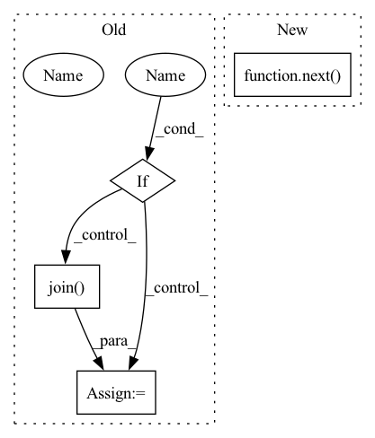

Pattern ID :34536
Before Change
super(ChestXrayDataset, self).__init__(
root=train_path, transform=self.transform)
elif mode == "val":
if download :
val_path = os.path.join(
root, tag, "chest_xray", "val")
else:
val_path = os.path.join(
root, "chest-xray", "val")
After Change
if show:
loader = DataLoader(self, batch_size=show, shuffle=True)
inputs, classes = next( iter(loader))
class_names = self.classes
out = torchvision.utils.make_grid(inputs)
self.imshow(out, title=[class_names[x] for x in classes])
In pattern: SUPERPATTERN
Frequency: 3
Non-data size: 4
Instances Fragment ID: 99322671
Project Name: tuttelikz/farabio
Commit Name: f1d17ab62f7226de3ebd472422d38aa48b177fc3
Time: 2021-07-27
Author: s.askaruly@gmail.com
File Name: farabio/data/biodatasets.py
M Class Name: ChestXrayDataset
N Class Name: ChestXrayDataset
M Method Name: __init__(8)
N Method Name: __init__(7)
M Parent Class: ImageFolder
N Parent Class: ImageFolder
M File Name: farabio/data/biodatasets.py
N File Name: farabio/data/biodatasets.py
M Start Line: 101
M End Line: 144
N Start Line: 100
N End Line: 131
Before Change
requirement_desc = \
f"dataset must contain a file matching pattern \"{pattern}\""
if exclude_fnames :
requirement_desc += " (but not named " + \
", ".join( f""{e}"" for e in exclude_fnames) + ")"
if not self._is_path_within_root(pattern):
self.fail(requirement_desc)After Change
self._start_requirement("require_file")
return next( self._require_files_iter(
pattern, exclude_fnames=exclude_fnames))
def require_files(self, pattern: str, *,
exclude_fnames: Union[str, Collection[str]] = (),
) -> List[str]: Fragment ID: 99322681
Project Name: openvinotoolkit/datumaro
Commit Name: 437b39d481134e48ed086517b7b3c53d7c6d26f0
Time: 2022-02-15
Author: roman.donchenko@intel.com
File Name: datumaro/components/format_detection.py
M Class Name: FormatDetectionContext
N Class Name: FormatDetectionContext
M Method Name: require_file(0)
N Method Name: require_file(0)
M Parent Class:
N Parent Class:
M File Name: datumaro/components/format_detection.py
N File Name: datumaro/components/format_detection.py
M Start Line: 210
M End Line: 237
N Start Line: 210
N End Line: 211
Before Change
self.transform = self.get_train_transform(shape)
if mode == "train":
if download :
train_path = os.path.join(
root, tag, "chest_xray", "train")
else:
train_path = os.path.join(
root, "chest-xray", "train")
super(ChestXrayDataset, self).__init__(
root=train_path, transform=self.transform)
elif mode == "val":After Change
if show:
loader = DataLoader(self, batch_size=show, shuffle=True)
inputs, classes = next( iter(loader))
class_names = self.classes
out = torchvision.utils.make_grid(inputs)
self.imshow(out, title=[class_names[x] for x in classes])
Fragment ID: 99322688
Project Name: tuttelikz/farabio
Commit Name: bd0374049d13c5b0d7cad83da095e2cbc01725d2
Time: 2021-07-29
Author: s.askaruly@gmail.com
File Name: farabio/data/biodatasets.py
M Class Name: ChestXrayDataset
N Class Name: ChestXrayDataset
M Method Name: __init__(8)
N Method Name: __init__(7)
M Parent Class: ImageFolder
N Parent Class: ImageFolder
M File Name: farabio/data/biodatasets.py
N File Name: farabio/data/biodatasets.py
M Start Line: 101
M End Line: 144
N Start Line: 100
N End Line: 131